<!DOCTYPE html>
<html lang="en">
  <head>
    <meta charset="utf-8" />
    <meta name="viewport" content="width=device-width, initial-scale=1.0, maximum-scale=1.0, user-scalable=no" />

    <title>reveal-md</title>
    <link rel="shortcut icon" href="./favicon.ico"/>
    <link rel="stylesheet" href="./dist/reveal.css" />
    <link rel="stylesheet" href="./dist/theme/black.css" id="theme" />
    <link rel="stylesheet" href="./css/highlight/zenburn.css" />
    <link rel="stylesheet" href="./_assets/main.css" />

  </head>
  <body>
    <div class="reveal">
      <div class="slides"><section  data-markdown><script type="text/template"># Clustering


</script></section><section  data-markdown><script type="text/template">
# Agenda

* __Supervised vs Unsupervised learning__
* __Types of Unsupervised learning__
  * Clustering
  * Association
* __Clustering__
  * Types of clustering
  * Clustering Techniques
  * Hierarchical Clustering
  * K\-means Clustering
  * K\-means in python
  * Clustering use cases
  * Applications


</script></section><section  data-markdown><script type="text/template">
# Supervised vs Unsupervised learning

__Unsupervised Learning__

__Supervised Learning__


</script></section><section  data-markdown><script type="text/template">
# Types of Unsupervised Learning

__Unsupervised Learning__


</script></section><section  data-markdown><script type="text/template">
__Unsupervised Learning__


__FP – growth Algorithm__

__K\- means Clustering__

__Hierarchical Clustering__

__Apriori__  __Algorithm__


</script></section><section  data-markdown><script type="text/template">
# Association Rule Mining

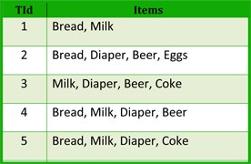


</script></section><section  data-markdown><script type="text/template">
# Clustering

A _cluster_ is collection of objects whichare“similar”  between them andare“dissimilar”tothe objects belongingtootherclusters\.

Forexamplebased on theincomeofcustomerswe couldgrouptheminto“LowIncome”\,“ModerateIncome” and“HighIncome”\.

Itseasytoclassify withonevariable\,butwhenseveralvariablescomeinto playthegroupingwould become difficult\.


</script></section><section  data-markdown><script type="text/template">
# Distance Metrics

* Many supervised and unsupervised machine learning algorithm depends upon the distance between 2 data points\.
* Some of the distance metrics commonly used in machine learning models are\,
  * Euclidean Distance
  * Manhattan Distance
  * Minkowski Distance
  * Cosine Distance
* The commonly used distance metrics in clustering algorithm is __Euclidean Distance__

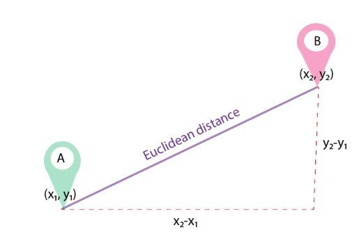

__Euclidean Distance__

The Euclidean distance between points p and q is the length of the line segment connecting p and q

In Cartesian coordinates\, if p = \(p1\, p2\,\.\.\.\,pn\) and q = \(q1\, q2\,\.\.\.\,qn\) are two points in Euclidean n\-space\, then the Euclidean distance \(d\) from p to q\, or from q to p is given by the Pythagorean formula

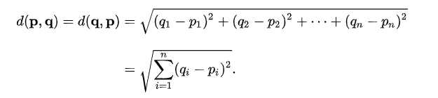


</script></section><section  data-markdown><script type="text/template">
# Types of Cluster Analysis

<span style="color:#FFFFFF"> __Density Clustering__ </span>

<span style="color:#FFFFFF">Clusters are defined by areas of concentrated densities\. This method begins by searching for  areas of dense data points and assigns those areas to the same cluster</span>

<span style="color:#808080"> __Centroid Clustering__ </span>

<span style="color:#808080">Each cluster is represented by a centroid which derives clusters based on the distance of the data point to the centroid of the clusters\. It minimizes the intra cluster distances maximizing the inter cluster distances</span>

<span style="color:#FFFFFF"> __Distribution Clustering__ </span>

<span style="color:#FFFFFF">This method each cluster belongs to normal distribution\.</span>  <span style="color:#FFFFFF">The idea is that the data points are divided based on probability of belonging to the same normal distribution\.</span>

<span style="color:#808080"> __Connectivity Clustering__ </span>

<span style="color:#808080">The Clusters are defined by grouping the nearest neighbors\, based on the data points\. The idea is near by data points are more related than the other points farther away\. These cluster represents hierarchy</span>


</script></section><section  data-markdown><script type="text/template">
__Density Clustering__

__Centroid Clustering__

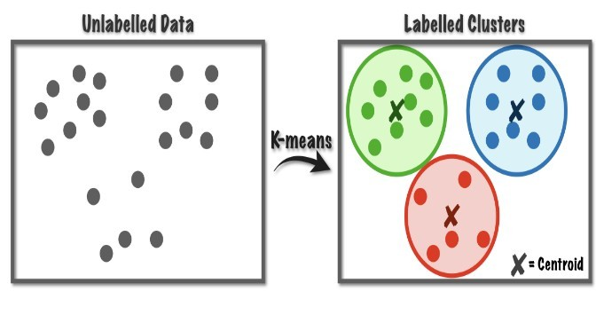

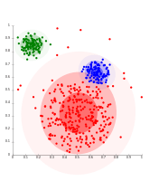

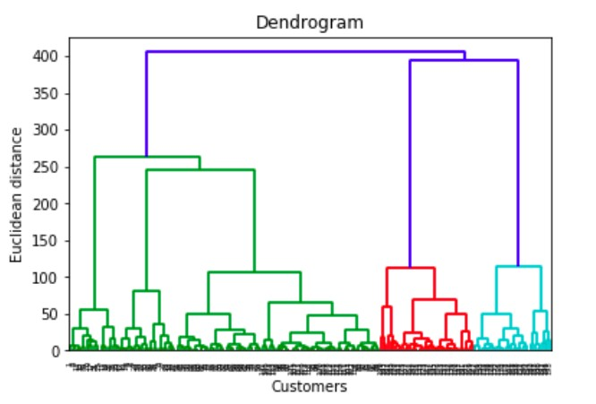

__Distribution Clustering__

__Hierarchical Clustering__


</script></section><section  data-markdown><script type="text/template">
# Clustering Techniques

<span style="color:#808080">Hierarchical</span>

<span style="color:#808080">Clustering</span>

<span style="color:#808080">K\- Means</span>

<span style="color:#808080">Clustering</span>

* <span style="color:#404040">Small Data \(N<100\)</span>
* <span style="color:#404040">Performed by two approaches</span>
  * <span style="color:#404040">Agglomerative</span>
  * <span style="color:#404040">Decisive</span>
* <span style="color:#404040">Number of clusters can be determined through final</span>  <span style="color:#404040">dendogram</span>
* <span style="color:#404040">Computationally more expensive</span>

<span style="color:#404040">Large Data \(N>100\)</span>

<span style="color:#404040">Number of clusters should be pre determined</span>

<span style="color:#404040">Computationally less expensive</span>


</script></section><section  data-markdown><script type="text/template">
# Hierarchical Clustering

Hierarchical Clustering is a method of cluster analysis which seeks to build a hierarchy of clusters\. \[Wikipedia\]


</script></section><section  data-markdown><script type="text/template">
Startwitheachobservationasindividualcluster andateach stepcombineobservations/ Clustersto  formonelarge  clusters

Begin withonelargecluster  andproceed tosplitintosmaller cluster  itemsthat aremostdissimilar


</script></section><section  data-markdown><script type="text/template">
# Linkages

In the <span style="color:#FFC000"> __single\-link__ </span> method\, thedistance between twoclustersis the _minimum_ of thedistances betweenallpairsofpatternsdrawnonefromeachcluster\.

In the <span style="color:#FFC000"> __complete\-link__ </span> algorithm\,thedistance between  twoclustersis the _maximum_ of all pairwisedistances  betweenpairsofpatternsdrawnonefromeachcluster\.

In the <span style="color:#FFC000"> __average\-link__ </span> algorithm\,thedistance between  twoclustersis the _average_ of all pairwisedistances  betweenpairsofpatternsdrawnonefromeachcluster\(which is thesameas thedistance betweenthe means in thevectorspace case – easiertocalculate\)\.

In the <span style="color:#FFC000"> __Centroid__ </span> method thegeometric centreiscomputed\.Thedistance between twoclustersequals  thedistance between twocentroids\.


</script></section><section  data-markdown><script type="text/template">
# Agglomerative Clustering - Process

At the start\, treat each data point as one cluster\. Therefore\, the number of clusters at the start will be K\, while K is an integer representing the number of data points\.

Form a cluster by joining the two closest data points resulting in K\-1 clusters\.

Form more clusters by joining the two closest clusters resulting in K\-2 clusters\.

Repeat the above three steps until one big cluster is formed\.

Once single cluster is formed\, dendrograms are used to divide into multiple clusters depending upon the problem\.


</script></section><section  data-markdown><script type="text/template">
# Agglomerative Clustering

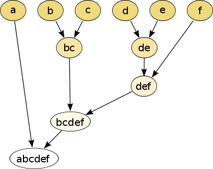

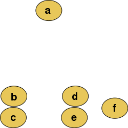

Agglomerative Representation


</script></section><section  data-markdown><script type="text/template">
# K- means Clustering

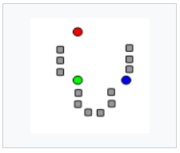

* The k\-means algorithm works on the partitioning  criteria “ <span style="color:#FFC000">maximize intra\-cluster similarity and minimize inter\-cluster  similarity</span> ”
* The “K” in K\-Means refers to the number of clusters\.
* For a given number of partitions \(say k\)\, the algorithm creates an initial k partitions with centroids chosen randomly
* Then it uses the iterative reallocation technique to improve the  partitioning by moving objects from one group to other\.
* The centroid are reassigned to the mean of all the data points in the cluster\.
  * Clusters produced vary from one run to another\.
* ‘Closeness’ is measured by Euclidean distance

K=3\, K centroids are randomly initialised

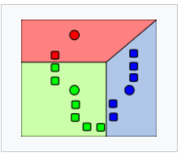

K clusters are created by associating every observation with nearest centroid

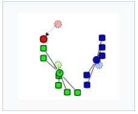

The mean of each clusters becomes the new centroid

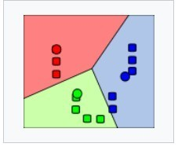

Iteration continues till it reaches convergence


</script></section><section  data-markdown><script type="text/template">
What do you think is the ideal number of clusters?


</script></section><section  data-markdown><script type="text/template">
Step 1: Select the number of clusters to be identified \(Lets select 3 for this case\)

Step 2: Randomly select 3 distinct data point \( These points are centroids for each clusters\)

Step 3: Measure the distance between first point and selected 3 clusters

Step 4: Assign the first point to the nearest cluster \( <span style="color:#FF0000">Red</span> in the case\)


</script></section><section  data-markdown><script type="text/template">
Step 5: Calculate the mean value including the new point for the red cluster

Find out which cluster the point 2 belongs to\, how?

Repeat the same procedure but measure the distance to the <span style="color:#FF0000">red</span> mean

Step 4 and 5 are repeated for each data point


</script></section><section  data-markdown><script type="text/template">
To which cluster this point belongs to?

To which cluster does this point belongs to ?


</script></section><section  data-markdown><script type="text/template">
Since all these points are closer to green cluster\, all are assigned Cluster <span style="color:#2C973E">Green</span>


</script></section><section  data-markdown><script type="text/template">
Result from 1stIteration

Original/Expected Result


</script></section><section  data-markdown><script type="text/template">
Second Iteration

Minimize Within Cluster sum of squares \(WCSS\) \(i\.e\. variance\)

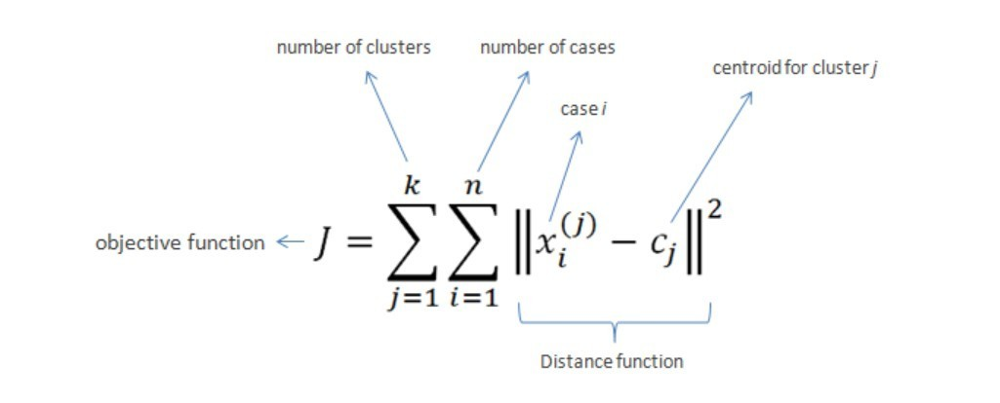


</script></section><section  data-markdown><script type="text/template">
# WCSS and BCSS

WCSS measures the variability of the observations within each cluster\.

A cluster that has a small sum of squares is more compact than a cluster that has a large sum of squares\. Clusters that have higher values exhibit greater variability of the observations within the cluster\.

WCSS is influenced by the number of observations\. As the number of observations increases\, the sum of squares increases\.

BCSS measures the squared average distance between all centroids\.

Essentially\, BCSS measures the variation between all clusters\. A large value can indicate clusters that are spread out\, while a small value can indicate clusters that are close to each other\.

Within Cluster Sum of Squares

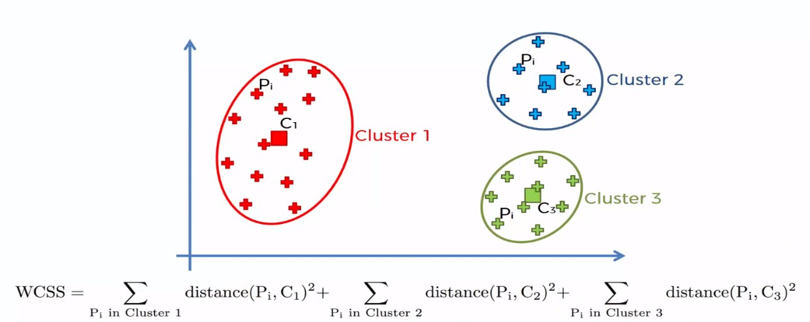

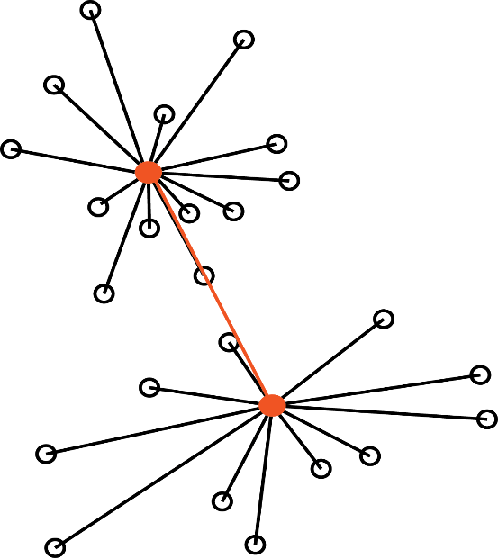

Between Clusters Sum of Squares


</script></section><section  data-markdown><script type="text/template">
# Elbow method

The "elbow" or "knee of a curve" as a cut\-off point is a common heuristic in  optimization to choose a point where diminishing returns are no longer worth the additional cost\.

In clustering\, this means defining the number of clusters so that adding another cluster doesn't give much better modelling of the data\.

The intuition is that increasing the number of clusters will naturally improve the fit but this might cause over\-fitting\.

Once the number of clusters exceeds the actual number of groups in the data\, the added information will drop sharply\, because it is just subdividing the actual groups\.

Assuming this happens\, there will be a sharp elbow in the graph of explained variation versus clusters: increasing rapidly up to _k_ \(under\-fitting region\)\, and then increasing slowly after _k_ \(over\-fitting region\)\.

x\-axis\-number ofclusters

y\-axis\-withinClustersum of  squares

The point atwhich the chartbendsor thewcss becomessmallwould be  consideredas theoptimal numberofclusters


</script></section><section  data-markdown><script type="text/template">
# Applications


</script></section><section  data-markdown><script type="text/template">
# Disadvantages

Difficulty in comparing quality of the clusters produced

Fixed number of clusters can make it difficult to predict what k should be

Does not work non globular data

Sensitive to Outliers and noise

Low capability to pass the local optimum

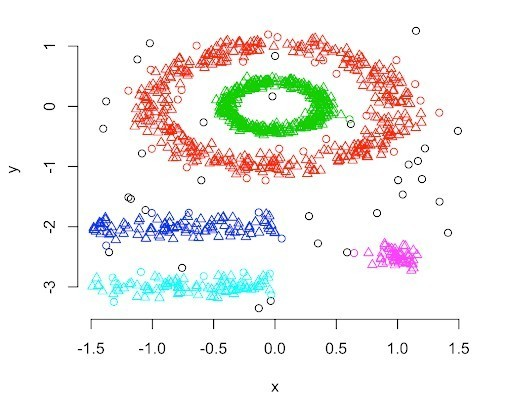

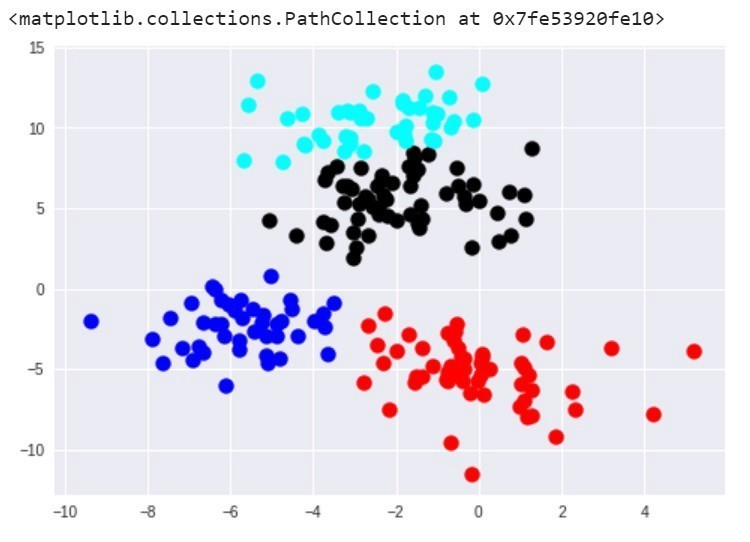


</script></section><section  data-markdown><script type="text/template">
# Thank you


</script></section><section  data-markdown><script type="text/template">
</script></section></div>
    </div>

    <script src="./dist/reveal.js"></script>

    <script src="./plugin/markdown/markdown.js"></script>
    <script src="./plugin/highlight/highlight.js"></script>
    <script src="./plugin/zoom/zoom.js"></script>
    <script src="./plugin/notes/notes.js"></script>
    <script src="./plugin/math/math.js"></script>
    <!-- <script src="./plugin/audio-slideshow/plugin.js"></script>
    <script src="./plugin/audio-slideshow/RecordRTC.js"></script>
    <script src="./plugin/audio-slideshow/recorder.js"></script> -->
    <script src="./_assets/plugin/audio-slideshow/plugin.js"></script>
    <script src="./_assets/plugin/audio-slideshow/RecordRTC.js"></script>
    <script src="./_assets/plugin/audio-slideshow/recorder.js"></script>

    <script>
      function extend() {
        var target = {};
        for (var i = 0; i < arguments.length; i++) {
          var source = arguments[i];
          for (var key in source) {
            if (source.hasOwnProperty(key)) {
              target[key] = source[key];
            }
          }
        }
        return target;
      }

      // default options to init reveal.js
      var defaultOptions = {
        controls: true,
        progress: true,
        history: true,
        center: true,
        transition: 'default', // none/fade/slide/convex/concave/zoom
        audio: {
          prefix: 'audio-slideshow/',
          suffix: '.ogg',
          defaultDuration: 5,
          textToSpeechURL: "http://api.voicerss.org/?key=ba4d2c2e7197417a8076d3782a1c90b3&hl=en-gb&c=ogg&src=",
          advance: 500,
          autoplay: true,
          defaultNotes: true,
          defaultText: true,
          playerOpacity: 0.2,
        },
        plugins: [
          RevealMarkdown,
          RevealHighlight,
          RevealZoom,
          RevealNotes,
          RevealMath, RevealAudioSlideshow, RevealAudioRecorder
        ]
      };

      // options from URL query string
      var queryOptions = Reveal().getQueryHash() || {};

      var options = extend(defaultOptions, {}, queryOptions);
    </script>


    <script>
      Reveal.initialize(options);
    </script>
  </body>
</html>
